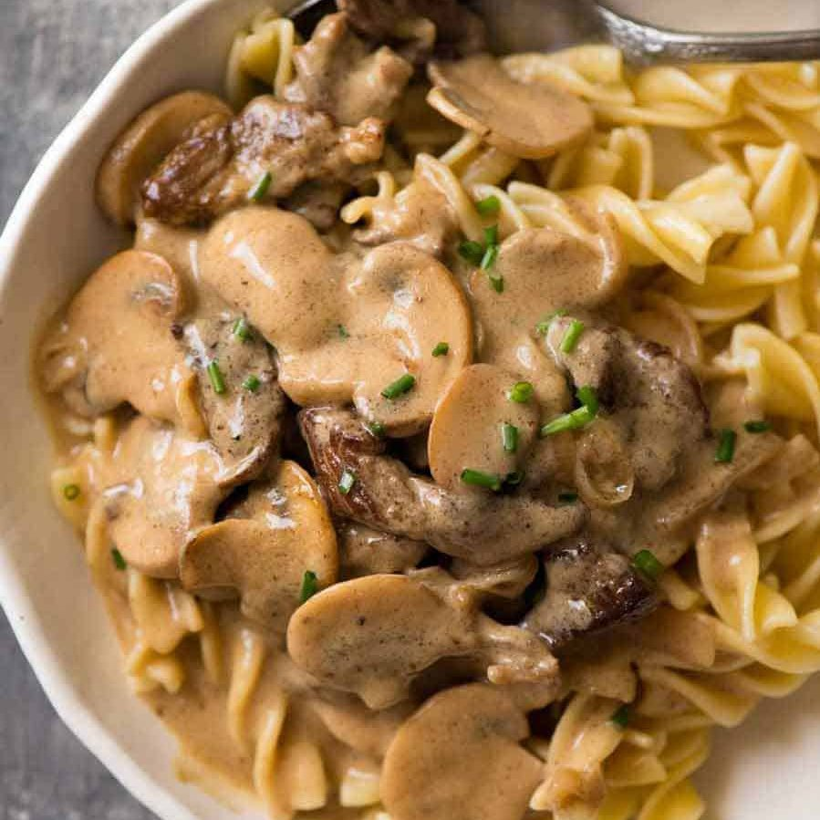
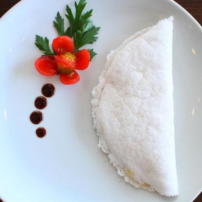

Odin Recipes

Description
Stroganoff sauce is a sour cream gravy made with beef broth that's thickened with flour. It's flavoured with mustard and has mushrooms in it.
Ingredients
- 600 g / 1.2 lb scotch fillet steak / boneless rib eye
- 2 tbsp vegetable oil , divided
- 1 large onion (or 2 small onions), sliced
- 300 g / 10 oz mushrooms , sliced (not too thin)
- 40 g / 3 tbsp butter
- 2 tbsp flour
- 2 cups / 500 ml beef broth , preferably salt reduced
- 1 tbsp Dijon mustard
- 150 ml / 2/3 cup sour cream
- Salt and pepper
- 250 - 300 g / 8 - 10 oz pasta or egg noodles of choice
- Chopped chives , for garnish (optional)
Steps
- Use your fist (or rolling pin or mallet) to flatten the steaks to about 3/4cm / 1/3" thick. Slice into 5mm / 1/5" strips (cut long ones in half), discarding excess fat.
- Sprinkle with a pinch of salt and pepper.
- Heat 1 tbsp oil in a large skillet over high heat. Scatter half the beef in the skillet, QUICKLY spread it with tongs. Leave untouched for 30 seconds until browned. Turn beef quickly (as best you can!). Leave untouched for 30 seconds to brown. Immediately remove onto a plate. Don't worry about pink bits and that it will be raw inside.
- Add remaining 1 tbsp oil and repeat with remaining beef.
- Turn heat down to medium high. Add butter, melt. Then add onions, cook for 1 minute, then add mushrooms.
- Cook mushrooms until golden. Scrape bottom of fry pan to get all the golden bits off (this is flavour!).
- Add flour, cook, stirring, for 1 minute.
- Add half the broth while stirring. Once incorporated, add remaining broth.
- Stir, then add sour cream and mustard. Stir until incorporated (don't worry if it looks split, sour cream will "melt" as it heats).
- Bring to simmer ,then reduce heat to medium low. Once it thickens to the consistency of pouring cream (3 - 5 minutes), adjust salt and pepper to taste.
- Add beef back in (including plate juices). Simmer for 1 minute, then remove from stove immediately. (Note 4)
- Serve over pasta or egg noodles, sprinkled with chives if desired.

Description
Brazilian Tapioca are these little tortilla-like flatbreads made with goma de mandioca, or “yuca gum”, which is tapioca starch that's been hydrated with water. Brazilian Tapioca, which for obvious reasons us Brazilians just call tapioca hahah, is one of our most prized indigenous heritage dishes.
Ingredients
- 1 lb of Bob's Redmill Tapioca Flour
- 4 cups of cold water
- Pinch of salt
Steps
- Get some Bob's Redmill Tapioca Flour and place it on a dish deep enough to accommodate all the flour plus the water.
- Cover the tapioca with water. The water will bubble as the the tapioca starch starts to absorb it. Wait an hour, or up to overnight, then slowly pour the water out. You'll notice the starch now looks gummy, so we need to dry it.
- Using paper towels, or a clean dish towel, press gently against the gummy paste. I do this a few times, exchanging the paper towels for drier ones.
- When the gum looks chalky, and can be perforated with a fork, break it into chunks.
- Using your hands, break these chunks into a sandy mixture.
- Finally, pass that sandy mixture through a strainer to obtain a finer texture.
- Store the tapioca gum in a zippy bag, or in a glass container. It should last you 5-10 days in the fridge.
- Scoop 1/3 of a cup of the gum into a small nonstick pan and season it with a pinch of salt.
- Cook over medium to high heat, about 2-ish minutes.
- When the gum sticks together it's ready to be flipped. Flip, then cook one more minute on the other side and you're all done.
- Just add your favorite herbs, and drizzle with olive oil to keep it vegan. Or spread some salted butter, or jam, or peanut butter, or seriously ANYTHING!